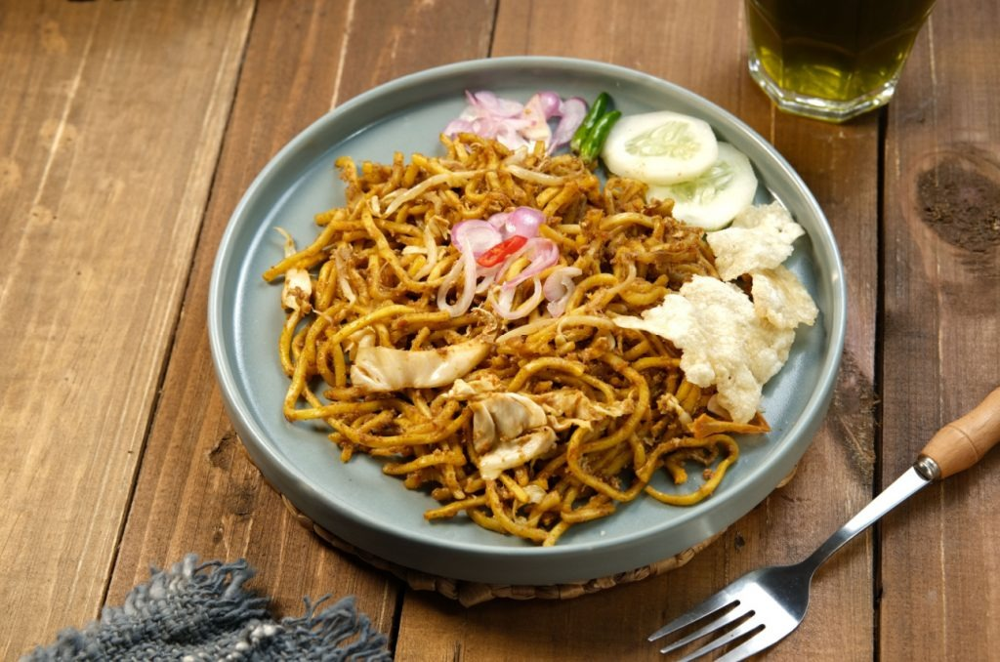

Resep Tradisional Aceh
Mie Aceh
Hidangan mie kuning tebal berpadu bumbu kari rempah yang gurih, pedas, dan beraroma semerbak. Dimasak bersama irisan daging sapi empuk, udang segar, kol, dan tauge, lalu disajikan hangat dengan emping melinjo dan acar segar.

Bahan-Bahan
Bahan Utama & Sayuran
- 500 gr mie kuning basah
- 150 gr udang segar, kupas
- 100 gr daging sapi, potong kotak kecil
- 100 gr kol putih, iris tipis
- 100 gr toge segar
- 1 buah tomat, potong memanjang
- 2 batang daun bawang, iris halus
- 4 siung bawang putih, iris tipis
- 4 siung bawang merah, iris tipis
- 1 sdm kecap asin
- 2 sdm kecap manis
- Garam secukupnya
- Kaldu jamur secukupnya
- 2 sdm minyak untuk menumis
Bumbu Halus
- 2 sdm bubuk kari india
- 3 siung bawang putih
- 5 buah cabai rawit (sesuai selera)
- 2 buah kemiri, sangrai
- 2 buah kapulaga
- 1/4 sdt adas manis
- 1/2 sdt merica butir
- 1 sdt garam
- 1 sdm minyak untuk menghaluskan bumbu
Topping & Pelengkap
- Emping melinjo goreng secukupnya
- Telur ceplok atau telur dadar
- Acar mentimun dan bawang merah
- Potongan jeruk nipis
Cara Membuat
-
1
Haluskan Bumbu
Haluskan semua bumbu halus lalu tambahkan sedikit minyak agar bumbu mudah tercampur rata. Sisihkan.
-
2
Tumis Daging & Udang
Tumis bawang merah dan bawang putih hingga harum, masukkan udang dan daging. Aduk hingga berubah warna.
-
3
Masukkan Bumbu & Mie
Masukkan bumbu halus dan mie kuning, aduk hingga bumbu merata ke seluruh mie.
-
4
Bumbui & Masak Sayuran
Tambahkan tauge, kol, kecap manis, garam, dan kaldu jamur. Masak sambil diaduk rata, koreksi rasa, lalu angkat.
-
5
Penyajian
Sajikan selagi hangat dengan topping telur, taburan emping, dan acar di sampingnya.